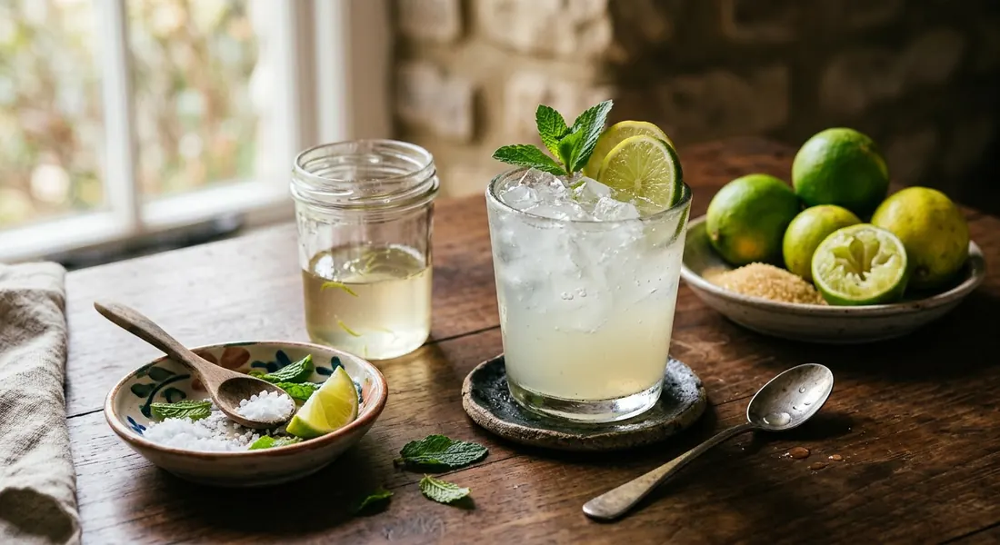

Thailand's lime juice — sour-leading, sweetened with cooled syrup, served over ice with the pinch of salt that makes the sour sing.

น้ำมะนาว is the counterpoint to Thailand's milky iced teas: no milk, no tea — just lime, sugar, water and ice. Kapook's version is built like a proper Thai drink: the sugar is dissolved into a syrup first and cooled, because granulated sugar poured into iced water never dissolves evenly; the juice is squeezed from limes rolled hard on the counter — some recipes soak them in warm water first — to release the most juice from the cells.
The street stall builds it in the glass. Pantip's Neranya posts the 22-ounce stall ratio: 30 ml of lime juice, 40 ml of syrup, 180 ml of warm water — warm, so the syrup and juice marry before the ice lands — and a pinch of salt. The salt is the detail western recipes skip: a tiny amount damps the acid's bite and makes the sour taste rounder rather than sharper.
Kapook's article is nine variants deep: the classic, a mint version, a honey-and-soda version, and a Brazilian condensed-milk limeade. TrueID's seller-style list adds the soda build — lime, sugar, water and soda water for fizz. All of them agree on the core: fresh limes, never bottled juice, and every seed strained out.
| Thai | English | Amount |
|---|---|---|
| มะนาวเขียวหรือมะนาวเหลือง | Limes, green or yellow | 6 (to yield 1 cup juice) |
| น้ำตาลทราย | Sugar | ¾–1 cup |
| น้ำเปล่า | Water (for the syrup) | 1 cup |
| น้ำเย็นจัด | Ice-cold water | 3 cups |
| เกลือ | Salt | a pinch |
| น้ำแข็ง | Ice | to taste |
| มะนาวฝาน ใบสะระแหน่ | Lime slices and mint, to garnish | a few |
The street-stall glass (Pantip, 22 oz): 30 ml lime juice, 40 ml sugar syrup, 180 ml warm water, a pinch of salt, ice to the top. The soda version (TrueID): 20 ml lime juice, 15 g sugar, 30 ml water, 150 ml soda water, a pinch of salt. The dorm-room glass (Wongnai): 3 limes, 4–5 tbsp syrup, 200 ml cold water, ice.
The water temperature. Pantip's stall version uses warm water so the syrup and juice marry before the ice; Kapook's pitcher uses ice-cold water from the start. Wongnai's dorm-room recipe splits it with cold water. The difference is mouthfeel: warm builds taste sweeter, cold builds stay crisper.
The sweet. Sugar syrup made in advance (Kapook, Pantip, Wongnai) versus plain sugar stirred into the glass (TrueID's soda version). Every source that makes a pitcher insists on syrup; only the single-glass builds get away with granulated sugar.
The salt. A pinch in the Pantip and TrueID builds, a half teaspoon in one Wongnai single-glass version, absent from Kapook's pitcher. Salt is the optional rounder of the sour — those who add it never go back, those who skip it never notice.
Fizz. TrueID's seller list tops the drink with soda water. The classic versions are flat. Both exist side by side on Thai drink menus.
The garnish. Lime slices alone (Pantip, Wongnai), lime with mint (Kapook). Kapook's nine variants also cover honey-soda and condensed-milk builds for those who want the drink to travel.
This recipe is translated from the following Thai-language sources. Where they disagree, we've said so.
1. Kapook Cooking — "9 สูตรน้ำมะนาว เครื่องดื่มคืนความสดชื่นเติมความเฮลธ์ตี้" (the pitcher recipe used here) — cooking.kapook.com
2. Pantip — Neranya, "น้ำมะนาวสด เปรี้ยวหวาน สดชื่น" (the 22-oz street-stall glass) — pantip.com
3. Wongnai — Nickktwf, "สูตร น้ำมะนาว" (the dorm-room glass) — wongnai.com
4. Wongnai — กินไม่อ้วน, "สูตร น้ำมะนาว" (the single glass with salt) — wongnai.com
5. TrueID Food — "20 สูตรเครื่องดื่มคลายร้อน (สูตรน้ำมะนาวโซดา)" (the soda version) — food.trueid.net